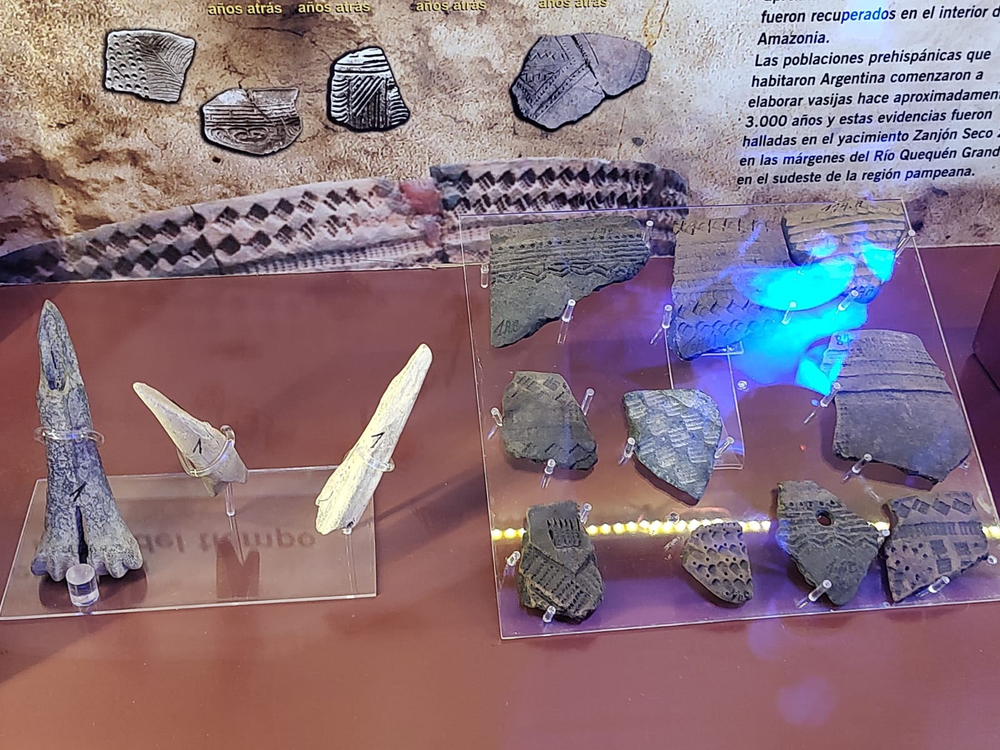
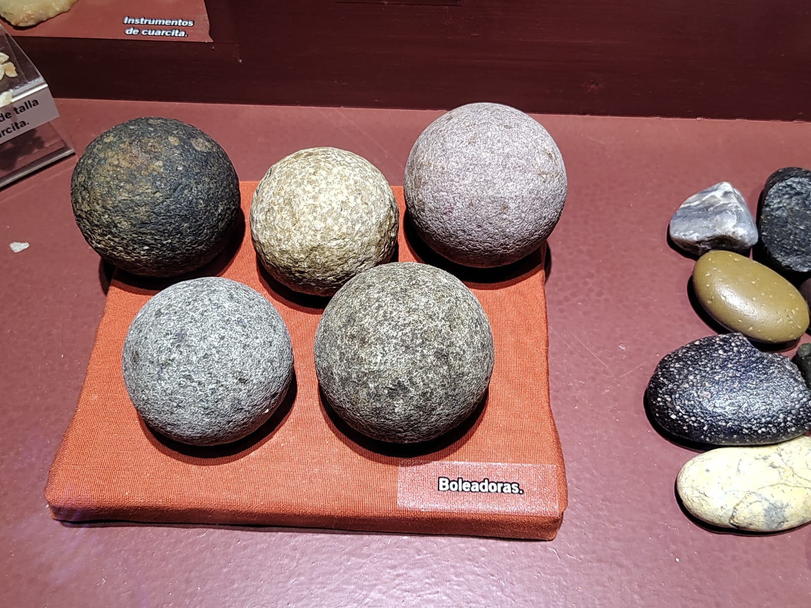

Galeria
En esta sección se veran diferentes fotos dentro del museo y lo que ofrece en general, piezas arqueologicas, piezas paleontológicas, etc.

Piezas de las puntas de lanza de nuestros ancestros. Halladas en un pueblo de la provincia de Buenos Aires, llamado Villa Casique. Con estas primitivas armas nuestros antepasados cazaban a sus presas, pero tambien servian como defensa a animales peligrosos como el diente de sable o el perezozo gigante (Megatherio).

Restos encontrados del gliptodonte en las cercanias del cerro de tandil, se ha logrado recuperar en su mejor estado la cola del animal, permitiendonos conocer en mas detalle, que funciones cumplia y clasificar a las distintas especies de gliptodontes que existieron hasta hace 10.000 años.
